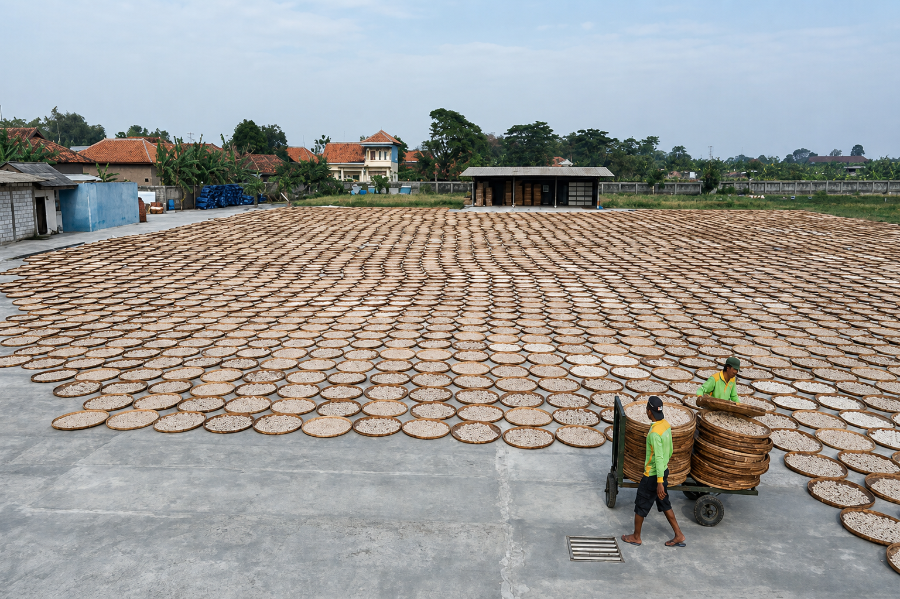
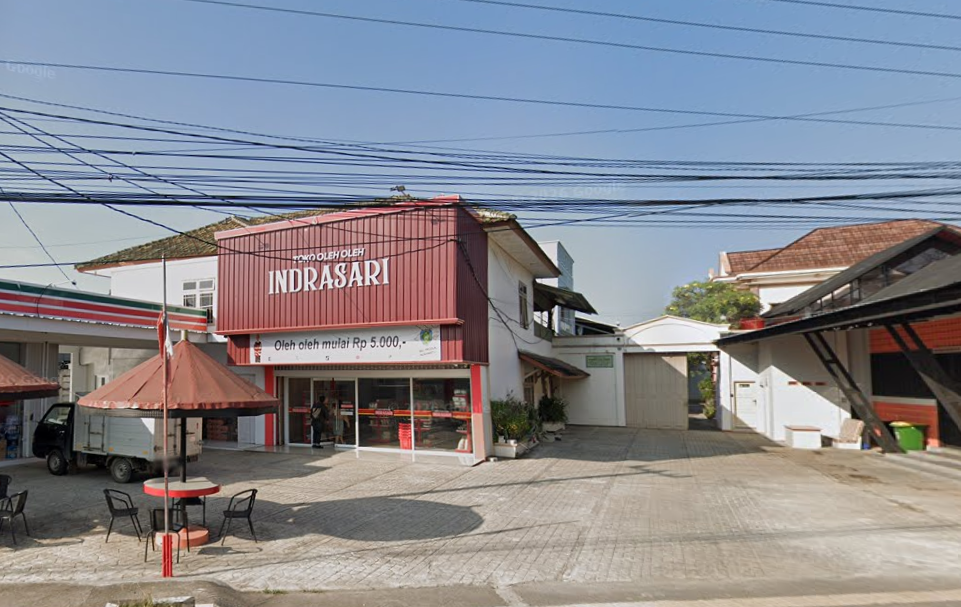

Rusmiyati
Supplier Katering
★★★★★
"Kerupuknya renyah dan warnanya cantik. Cocok untuk pelengkap lauk dikatering!"
Kerupuk udang renyah dari Dermayu, Indramayu. Praktis, halal, dan langsung digoreng.

Dibuat dari udang dan bumbu alami dengan resep turun-temurun.
Kerupuk kering dikemas rapat dan dikirim ke depan pintu Anda.
Bersertifikat halal, P-IRT 2053212010197-27, dan dipercaya pelanggan.

Adonan diiris sedang tidak tebal & tidak tipis, dijemur, lalu dikemas supaya langsung bisa digoreng di rumah.

Pilihan kerupuk udang dengan rasa gurih dan renyah yang pas.
"Kerupuknya renyah dan warnanya cantik. Cocok untuk pelengkap lauk dikatering!"
"Memang sudah dari dulu, berlangganan di kerupuk udang Putri Indrasari. Rasa enak dan banyak yang nyari."
"Menjadi pilihan kerupuk yang banyak diminati oleh pelanggan."
Datang langsung ke toko kami di Indramayu atau pesan lewat WhatsApp.
Pesan sekarang Buka di Google Maps